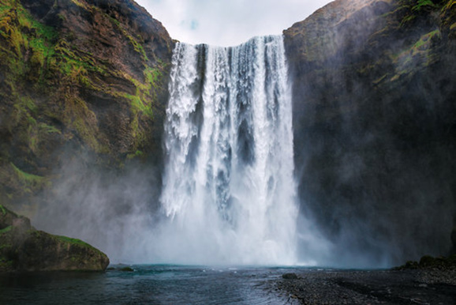

Importance of mountains and hills
Relief features are essential for human life. Often mountains and hills are a good source of water because they attract rainfall. Water is used by human beings and other organisms for various purposes. Additionally, mountains and hills are tourist attractions. Tourists climb mountains and hills to see forests, waterfalls and various organisms. People engage in tourism-related activities such as pottery-making to earn money. Figure 5 shows a waterfall.

In addition, on the slopes of some mountains there are thick forests with animals, which are tourist attractions. The trees found in forests provide wood and other building materials. Some trees provide medicines which are used by human beings to treat different diseases.